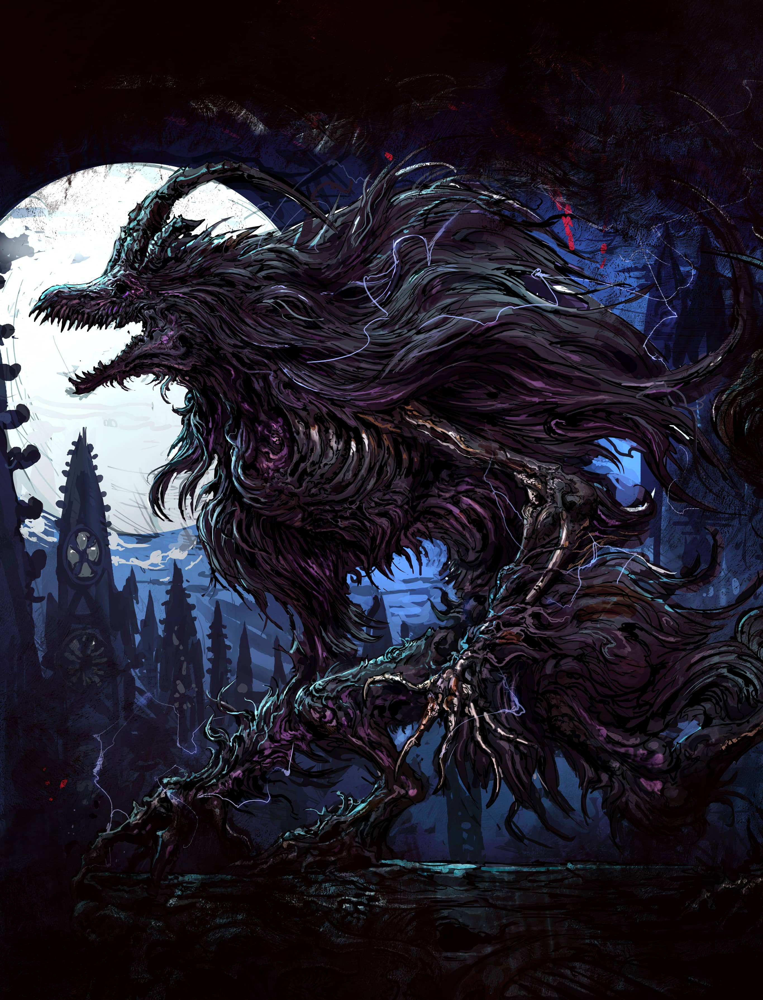

<!-- coding: gbk -->
<html>
<head>
<title>斯坦哈德的诡怖猎杀指南：玩家包</title>
<meta http-equiv="Content-Type" content="text/html; charset=gb2312">
<link rel="stylesheet" href="../../style.css">
</head>
<body>
<div style="WIDTH: 800px" >
<H1>斯坦哈德的诡怖猎杀指南：玩家包<BR> Steinhardt's Guide to the Eldritch Hunt: 
Player Pack</H1>
       
<H2> 创作人员 Credits</H2>
<P><STRONG>Lead Designer:</STRONG>  Evan “MonkeyDM” Mascaro<BR><STRONG>Additional Design:</STRONG> Mohamed 
“Aggi” Bellafquih, Max Wartelle, Kibblestasty, Serban M. 
Pop<BR><STRONG>Writing:</STRONG> Evan “MonkeyDM” Mascaro, 
Kibblestasty, TJ Phoenix, Serban M. 
Pop<BR><STRONG>Editing:</STRONG> Jessica Gombart, Evan “MonkeyDM” 
Mascaro, Phylea Homebrew, 
Max Wartelle<BR><STRONG>Formatting 
&amp; Layout:</STRONG>   Evan “MonkeyDM” Mascaro, Martin 
KirbyJackson<BR><STRONG>Marketing:</STRONG> Loot Tavern Publishing<BR><STRONG>Art Director:</STRONG>  Mohamed 
“Aggi” Bellafquih<BR><STRONG>Cover Illustrator:</STRONG>  Marcelo Orsi Blanco<BR><STRONG>Interior Illustrators:</STRONG> 
Marcelo Orsi Blanco, Maximiliano Moretto, Alan Marson “Dark Lord Studios”, Roman 
Kuzmin, Carl Hassler, Ryan Bittner, Rastislav Le, Adrián Prado, Ferdinand 
Ladeira, Phan Tuan Dat, Caio Santos, Nikulina Helena, Nele Diel, Dean Spencer, 
Wes Fraser, Lily Jade Searle, Ari Ibarra, Anna Dyukova, Eryk Szczygiel, Denis 
Zhbankov, Asherlisa, Clayshaper, Ognjen 
Sporin<BR><STRONG>Battle Maps:</STRONG>  CzePeku<BR><STRONG>Special Thanks:</STRONG> Thank you to over 25,000 
backers who made this project possible!</P>
<P><STRONG>翻译&amp;校对：</STRONG>冰原上的咸喵，刺猬永念，电子甜妹，��谷，栗司，辛拉面刺身，禹<BR><STRONG>排版：</STRONG>  刺猬永念</P>
<div class=center><STRONG>警告 
Warning<BR></STRONG>
      对于因参与本书所述狩猎活动而导致的受伤、肢体缺失、残疾、丧失理智或陷入疯狂，DM猴概不负责。DM猴及其合作伙伴均不建议治愈灾厄、沟通古老存在或探究诡怖真理的任何尝试。</div></div>

</body>
</html>
